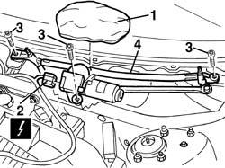

5050B38 windscreen wiper assembly - r+r or repair
- Path
- Procedures > 50 AUXILIARY UNITS > 5050 SCREEN WASHERS AND HEADLAMP WASH/WIPE > 5050B windscreen wash/wipe > 5050B38 windscreen wiper assembly - r+r or repair
- Kind
- repair procedure (removal / refitting; the operation number is the code)
- Applies to
- all engines; all production periods
- Interactive page
- https://sloeber94.github.io/elrnDB-a156/en/#/3238366
Applies to: all engines; all production periods
 Removing
Removing
 Refitting
Refitting5050B34 windscreen wiper arm/s complete with blade - r+r
7055A18 Windscreen base TRIM - R.R.
1. Remove the motor guard.
2. Disconnect the electrical connection.
 | Name | Connector |
|---|---|---|
2 | Windscreen wiper motor |
3. Unscrew.
4. Remove the windscreen wiper assembly.

Applies to: all engines; all production periods
Refitting
RemovingCheck that the windscreen wiper assembly is not damaged.
Reaasemble the windscreen wiper assembly.
Screw.
Connect the electrical connection.
Reinsert the motor guard.
7055A18 Windscreen base TRIM - R.R.
5050B34 windscreen wiper arm/s complete with blade - r+r
Check the function of the windscreen wiper.
Topics linked from this page (3)
- 5050B34 windscreen wiper arm/s complete with blade - r+r
- 7055A18 Windscreen base TRIM - R.R.
- N15 Windscreen wiper motor